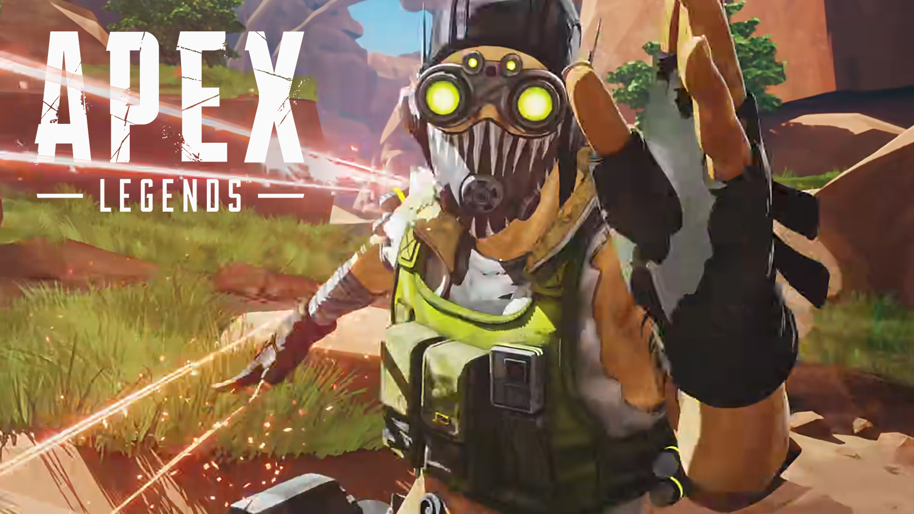

Octavio Silva, conocido como Octane, nació en una familia adinerada en la ciudad de Psamathe, una colonia de avanzada. se unio a los Apex Legends, un juego de batalla real extremo. Siendo el menor de tres hermanos, Octavio siempre buscó la adrenalina y la emoción en su vida, lo cual lo llevó a desarrollar una pasión por las acrobacias y las carreras.

Desde temprana edad, Octavio mostró un talento
innato para la velocidad y la acción. Sus padres lo educaron para que
siguiera los pasos de la empresa familiar, pero Octavio tenía otros
planes. Con el tiempo, dejó de lado la comodidad de su vida
privilegiada y se dedicó a perseguir su verdadera pasión: la
competición extrema.
Como piloto de carreras y acróbata consumado, Octavio se convirtió en
una sensación en Psamathe. Sus arriesgadas hazañas lo llevaron a ser
ampliamente reconocido en el circuito de deportes extremos y le
proporcionaron una gran base de fanáticos. Sin embargo, su búsqueda de
la emoción lo llevó a experimentar un terrible accidente en una de sus
acrobacias más peligrosas, perdiendo ambas piernas.
Octavio no se dejó abatir por su discapacidad. Determinado a no dejar que su carrera se detuviera, se sometió a una serie de mejoras cibernéticas para reemplazar sus extremidades perdidas. Gracias a su valentía y determinación, Octavio se recuperó rápidamente y regresó a la competición, convirtiéndose en una sensación en el circuito de deportes extremos una vez más.
Ingreso a Apex Legends: La fama de Octavio y su búsqueda constante de adrenalina lo llevaron a ser descubierto por los organizadores de Apex Legends, un evento de batalla real en la ficticia Tierra de los Reyes. Atraído por el desafío y la oportunidad de demostrar su valía en la arena, Octavio se unió a Apex Legends como el nuevo y audaz competidor, tomando el nombre en clave de Octane.